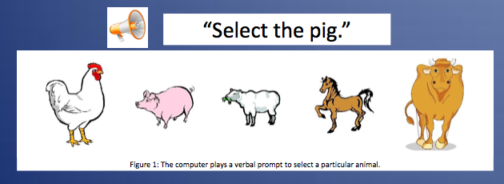
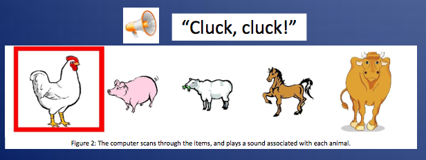
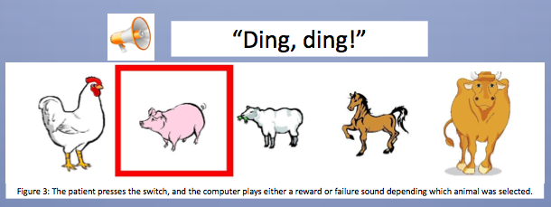

Cerebral palsy is a condition that causes varying degrees of motor impairment. The most severely affected of cerebral palsy users communicate using a large button, called a switch, connected to a computer. Using a technique called switch access scanning, the computer browses through various options automatically, and the user presses the switch when the option they want is selected. The switch can also be used to determine how much motor control a user does have, by seeing how quickly they respond when told to select a specific option.
For many users with cerebral palsy, supporting their heads for a long period of time is difficult. Compounding the situation, many also have cortical visual impairment, a form of visual impairment that results from damage to or defects in the brain. Because visual function can change from day to day and even from minute to minute in users with cortical visual impairment, it can be particularly difficult to evaluate these users’ cognitive and motor function.
A number of programs are already available for use with the switch. However, for all of these programs, the user must be looking at the screen. This can be difficult for users who cannot support their heads for long periods of time, or who have visual impairment.
Our program functions similarly to the existing programs for the switch. However, as the computer selects each option, it will also play a sound corresponding to that option. This will be useful to occupational therapists to distinguish between a user who has poor motor control and a user who cannot see the screen. In the future this could be adapted to help cerebral palsy users and others with similar disabilities to communicate their wants and needs.
Our game has two parts. The first part is a simple cause-and-effect game to help the users understand that the switch has an effect. The user will be instructed to press the switch to play a sound, and every time the user does so, a reward sound will be played. Once users seems to understand that pressing the switch causes the sound to be played, he or she can move on to the next game.
The next game is a linear scanning game. Linear scanning is an important tool used by occupational therapists to asses cognitive function in users with Cerebral Palsy. As the computer scans through different options, a corresponding sound is played, and the user presses the switch when the option they want is selected.



The impact of adding these sounds upon the program’s usability is tremendous. With the addition of a relatively small number of sound files, the program becomes usable without any visual prompting whatsoever. Theoretically, this program could even be used to evaluate a patient who is completely blind. This is a large step toward accommodating patients who may have good cognitive function, but whose physical function is limited by their vision.
The results of this project are available for download: